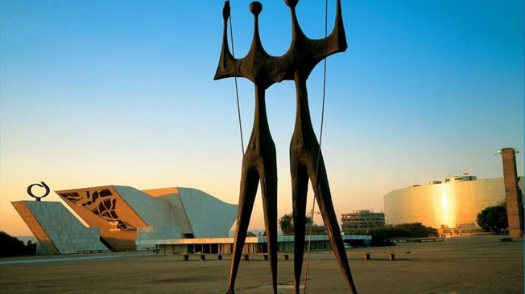

La Confederação Brasileira de Futebol (CBF), fundada en 1914 y afiliada a la FIFA desde 1923, ostenta un palmarés impresionante: 5 Copas Mundiales de la FIFA, 8 títulos de la Copa América, 5 Copas Mundiales Sub-20 de la FIFA, 3 Copas Mundiales Sub-17 de la FIFA, 3 Copas FIFA Confederaciones, 5 Copas Mundiales de Futsal de la FIFA, 4 Copas Mundiales de Beach Soccer de la FIFA y decenas de trofeos continentales. Pocas asociaciones nacionales han dejado una huella que se le parezca en el fútbol internacional.
En realidad, la única nota amarga para el país del que salió Pelé se produjo en la final de "su" Copa Mundial de la FIFA 1950. La Seleção, observada por los 174.000 atónitos hinchas que abarrotaron el mítico estadio de Maracaná, dejó que la cuarta edición de la Copa Jules Rimet se le escapara de las manos con una derrota por 2-1 ante Uruguay. El fútbol ocupa un lugar de honor en Brasil y, aunque los brasileños también son unos apasionados del voleibol, el baloncesto, el tenis, la fórmula 1 y otros deportes de motor, sólo al legendario Ayrton Senna se le venera exactamente de la misma forma que a los más célebres exponentes del deporte rey en el país. Entre ellos se lleva la palma O Rei Pelé, cuyo nombre es casi sinónimo de deporte brasileño en sí mismo, pero hay toda una serie de talentos excepcionales que han vestido la camiseta auriverde con distinción a través de los años: Leônidas, Garrincha, Didi, Vavá, Zagallo, Tostão, Zico, Jairzinho, Carlos Alberto, Sócrates, Bebeto, Romario, Cafú, Ronaldo, Roberto Carlos... La lista de jugadores que han grabado sus nombres en la memoria colectiva es realmente impresionante. El fútbol brasileño sigue produciendo nuevos talentos fuera de serie y, actualmente, son las superestrellas Ronaldinho (Ronaldo de Assis Moreira), Kaká (Ricardo Izecson Santos Leite), o los jóvenes Neymar y Leandro Damião quienes fascinan a los amantes del fútbol por todo el mundo.
Suele decirse que el primer navegante europeo que puso sus pies en el país fue el español Vicente Yáñez Pinzón, quien, al parecer, desembarcó cerca del emplazamiento de la actual Recife el 26 de enero de 1500. Oficialmente, no obstante, se considera al portugués Pedro Álvares Cabral como el descubridor de Brasil. Su flota, que zarpó rumbo a las Indias, arribó al litoral sur del actual estado de Bahía el 22 de abril de 1500. Desde 1530, la Corona Portuguesa puso en práctica una política colonial que duró siglos, y que acabó cuando Don Pedro I declaró la independencia del país el 7 de septiembre de 1822. Después de 1822, Brasil fue gobernado por una dinastía imperial, hasta que un levantamiento militar liderado por el mariscal Manuel Deodoro da Fonseca obligó al emperador Don Pedro II a abdicar en noviembre de 1889. El país se convirtió en una república y, a pesar de un largo periodo de inestabilidad y de sufrir incluso una dictadura militar entre 1964 y 1985, ahora disfruta de los frutos de la democracia. Dilma Vana Rousseff es la actual Presidenta de la nación tras suceder a Luiz Inacio "Lula" da Silva, que ocupó el cargo entre 2003 el 1 de enero de 2011. Es la primera mujer que ocupa el cargo de máxima dirigente del país.
Brasil, un país predominantemente agrícola hasta hace poco, experimentó un rápido crecimiento industrial durante todos los años 60 y 70, y hacia la década de 1980 poseía ya una economía básicamente moderna y diversificada. Dicho desarrollo corrió parejo a una intensa explotación de sus recursos naturales, especialmente el carbón y el mineral de hierro. Casi una cuarta parte de la producción mundial de café procede de las plantaciones brasileñas de los estados de São Paulo, Paraná, Espírito Santo y Minas Gerais. Brasil es también uno de los principales productores mundiales de caña de azúcar (empleada no sólo para la fabricación de azúcar, sino también del alcohol que sirve de combustible a los 2.500.000 vehículos concebidos expresamente para su uso), ricino, cacao, maíz y naranjas. Produce asimismo grandes cantidades de soja, tabaco, patatas, algodón, arroz, trigo, mandioca y plátanos. La cría de ganado ovino y bovino también está muy presente en casi todos los estados. Además, Brasil empezó hace bastante poco a desarrollar la actividad minera, una nueva muestra de su voluntad de sacar partido de sus abundantes recursos naturales.
Brasil, el país más grande de Sudamérica, abarca casi la mitad de la superficie del continente. Sus costas están bañadas al este y al norte por el océano Atlántico, y comparte fronteras al norte con Venezuela, Guyana, Surinam y la Guayana francesa. Al oeste se encuentran Argentina, Paraguay, Bolivia y Perú, al noroeste Colombia y al sur Uruguay. De todos los países de Sudamérica, únicamente Chile y Ecuador no limitan con Brasil. Con una superficie de 8.547.404 km², Brasil es el quinto país más grande del mundo, por detrás de Rusia, China, Canadá y Estados Unidos. Se extiende de norte a sur en una longitud máxima de 4.345 kilómetros y, de este a oeste, llega a ocupar un ancho de de 4.330 kilómetros. El litoral atlántico es su parte más densamente poblada, sobre todo en las dos ciudades más grandes, São Paulo y Río de Janeiro. La capital, Brasilia, cuya población se cifraba en 2.094.000 habitantes en 2003, se encuentra en el interior del país, a más de 1.000 kilómetros de la costa.
Brasil tiene aproximadamente 190 millones de habitantes, que lo convierten en el quinto país más poblado del planeta. Casi un 75% de los brasileños son católicos, mientras que unos 26 millones de personas son protestantes. La comunidad judía, comparativamente, es muy reducida. El país se divide en cinco regiones: Centro-Oeste, Norte, Nordeste, Sur y Sudeste, subdivididas a su vez en 26 estados, más el Distrito Federal que alberga a la capital brasileña, Brasilia. Conocida por su gran potencial hidroeléctrico, la región Sudeste es la más poblada del país, con casi 80 millones de habitantes, en torno a un 40% del total. Es también la de mayor densidad demográfica (84,21 hab./km²) y la que ostenta una tasa más alta de urbanización (90%). La lengua oficial es el portugués. Sin embargo, muchos brasileños hablan otros idiomas, según sus orígenes. El alemán y el italiano, por ejemplo, están bastante extendidos en las ciudades del sur.